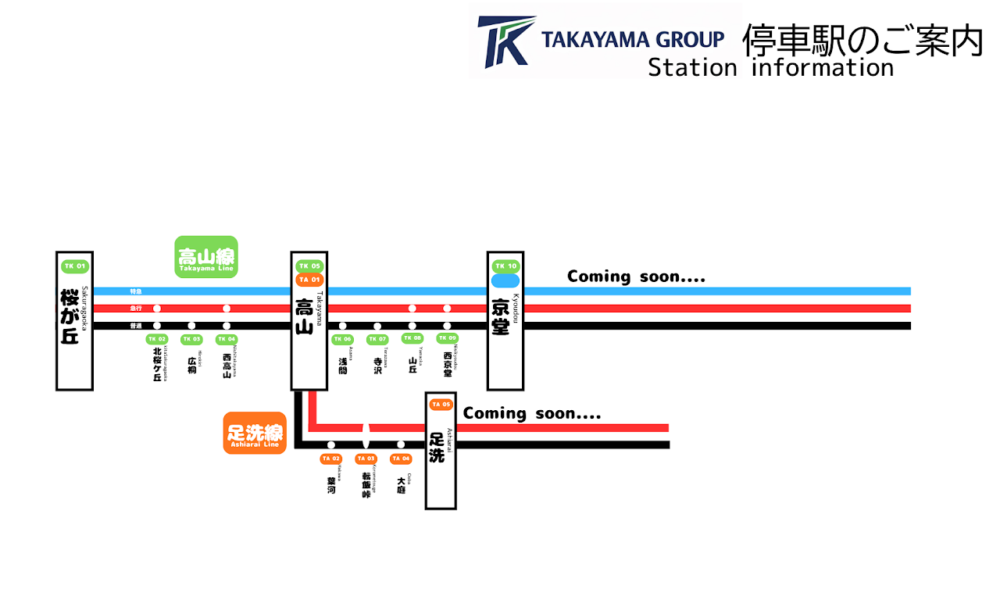

トップ
高山鐡道とは
路線図
運賃
運行状況
お知らせ
写真集
小ネタ情報
会社概要
路線図

高山線はTK、足洗線はTAです。画像を押すと大きく表示されます。
高山本線
TK01
桜が丘
TK02
北桜が丘
TK03
広桐
TK04
西高山
TK05
高山
→ 足洗支線
TK06
浅間
TK07
寺沢
TK08
山丘
TK09
西京堂
TK10
京堂
→ 空港線
TA02
葉河
足洗支線
TK05
高山
？？？
転飯峠
？？？
足洗
？？？
？？？